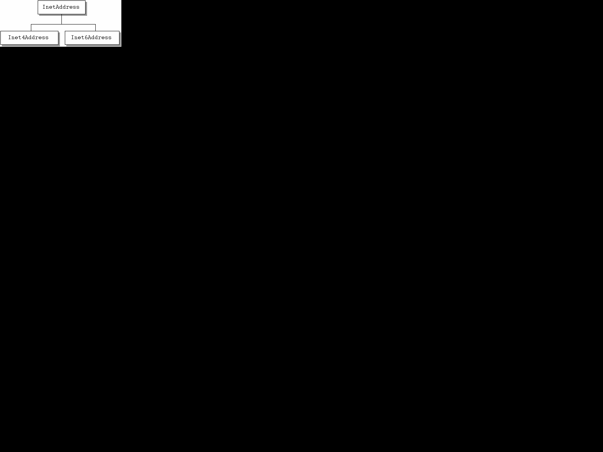
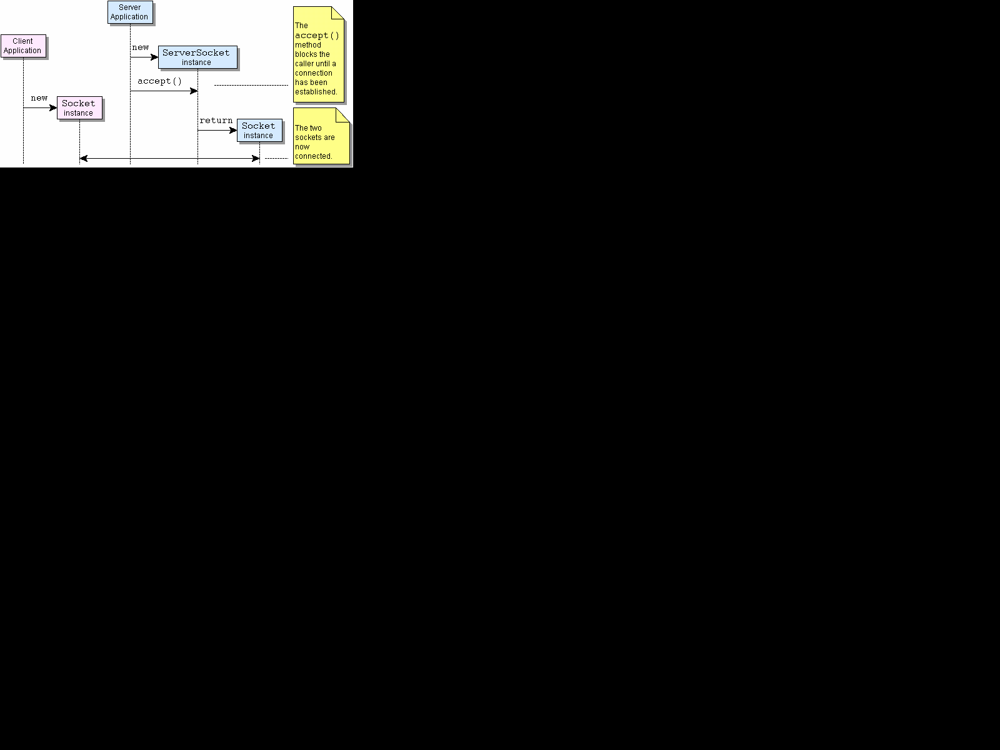
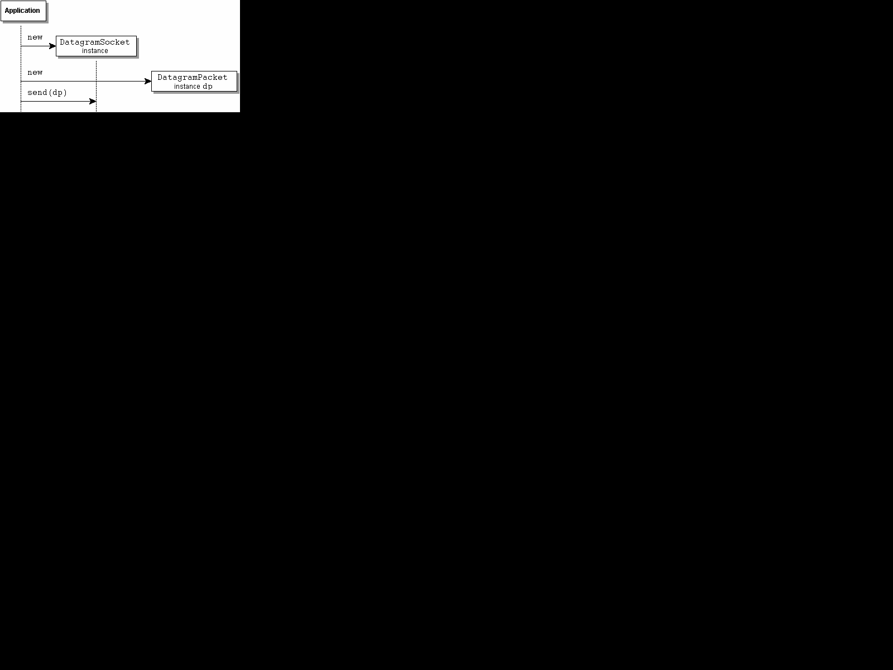
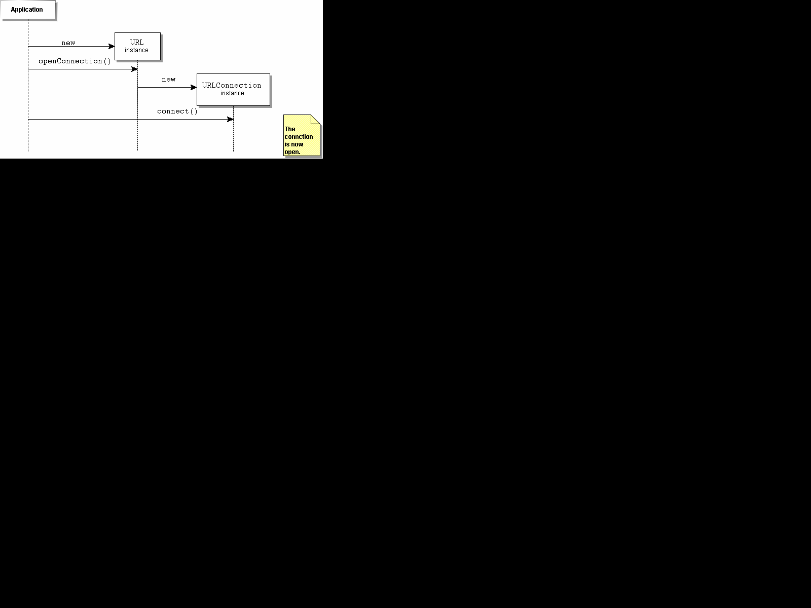

The Java Networking API (java.net) provides the
interfaces/classes for the following functions:
The goal of this document is to provide a high-level
overview of the facilities the java.net package
provides. For details about interfaces, classes, or factories, see
the
networking API. For basic networking concepts, see Trail:
Custom Networking in the Java Tutorial.
java.net provides the following addressing-related
classes:
InetAddressInet4AddressInet6AddressSocketAddressInetSocketAddressFor IP addressing, three classes are provided:
InetAddress, Inet4Address, and
Inet6Address. InetAddress represents an
IP address, which is either a 32- or 128-bit unsigned number used
by IP, the lower-level protocol on which protocols like TCP and UDP
are built. To represent 32-bit IPv4 address,
Inet4Address is provided. (An IPv4 address has the
familiar form nnn.nnn.nnn.nnn, where n is
an integer; e.g., 192.0.2.254). It is a subclass of
InetAddress. To represent 128-bit IPv6 addresses,
Inet6Address is provided. It is also a subclass of
InetAddress.

For socket addressing, two classes are provided:
SocketAddress and InetSocketAddress.
SocketAddress is an abstract socket
address, independent of a specific protocol. It is intended for
subclassing for a specific protocol. InetSocketAddress
below is an example. InetSocketAddress is a subclass
of SocketAddress; it represents an IP socket address.
It can include an IP address (e.g., 192.0.2.254) and
port (e.g., 80); a hostname (e.g.,
example.com) and port (e.g., 1000); or
port only (e.g., 1010). In the latter case, a wildcard
IP address is assumed.
These classes are related to making normal TCP connections:
ServerSocketSocketFor simple connections between a client and a server,
ServerSocket and Socket are all that you
will probably need.
ServerSocket represents the socket on a server that
waits and listens for requests for service from a client.
Socket represents the endpoints for communication
between a server and a client. When a server gets a request for
service, it creates a Socket for communication with
the client and continues to listen for other requests on the
ServerSocket. The client also creates a
Socket for communication with the server. The sequence
is shown below:
[D]
Once the connection is established,
getInputStream() and getOutputSteam() may
be used in communication between the sockets
The following are related to sending and receiving datagram packets via UDP.
DatagramPacketDatagramSocketDatagramPacket represents a datagram packet.
Datagram packets are used for connectionless delivery and normally
include destination address and port information.
DatagramSocket is a socket used for sending and
receiving datagram packets over a network via UDP. A
DatagramPacket is sent from a
DatagramSocket by calling the send(...)
method of DatagramSocket with
DatagramPacket as the argument:
send(DatagramPacket dp). receive(DatagramPacket
dp) is use for receiving a DatagramPacket. (The
MulticastSocket class may be used for
sending/receiving a DatagramPacket to a mulitcast
group. It is a subclass of DatagramSocket that adds
functionality for multicasting.)
[D]
These classes are related to locating or identifying network resources:
URIURLURLClassLoaderURLConnectionURLStreamHandlerHttpURLConnectionJarURLConnectionThe most commonly used classes are URI,
URL, URLConnection, and
HttpURLConnection.
URI represents a Uniform Resource Identifier for a
resource; it is an identifier for a resource but not necessarily a
locator for that resource. URL represents a Uniform
Resource Locator for a resource. URLs are a subset of URIs, though
the class URL is not a subclass of the
URI class. In short, a URL tells how to access the
resource, while a URI may or may not. The Uniform Resource Name
(URN) is another subset of URI. No Java
class exists for it.
URLConnection is the abstract superclass of all
classes that represent a connection between an application and a
network resource identified by a URL. Given a
URL and hence a protocol,
URL.openConnection() returns an instance of the
appropriate implementation of URLConnection for the
protocol. (The protocol is known from the URL.) The
instance provides the means with the method URLConnection.connect() to
actually open the connection and access the URL.
[D]
HttpURLConnection is the most commonly used
implementation of URLConnection. It is for
http protocol, the protocol used for accessing content
on web servers. In the above diagram, if the access protocol for
the URL were http, then an instance of
HttpURLConnection would be returned by the
openConnection() method.
Security includes authentication- and permissions-related
classes. Authentication relates to user authentication and involves
username and password checking. Authentication of a user may be
required in a number of situations, such as when a user tries to
access a URL. Permissions relate to what actions may be performed;
e.g., unless the NetPermission object
"setDefaultAuthenticator" exists, then
invoking the method Authenticator.setDefault(Authenticator
a) will cause a security exception.
Some proxies and origin servers require authentication
information, using authentication schemes such as BASIC and DIGEST.
For instance, when connecting with http via a proxy and the proxy
requires authentication, we call the Authenticator
class to obtain usernames, passwords, and other items needed to
authenticate. The following classes relate to authentication:
AuthenticatorPasswordAuthenticationIn addition to methods for user authentication, the
abstract class Authenticator also has
methods for querying about the authentication being requested (see
getRequestingXXX()). It is typically subclassed
and an instance of the subclass is registered with the system by
calling setDefault(Authenticator a). (Note that if
there is a security manager, it checks to see that the security
policy permits the NetPermission
"setDefaultAthenticator".) Then, when the
system requires authentication, it will call a method such as
requestPasswordAuthentication().
PasswordAuthentication is simply a data holder for
a user name and a password.
SocketPermissionNetPermissionA SocketPermission consists of a host, with
optional port range, and a set of actions that may be performed on
that host: connect, accept,
listen and/or resolve. It includes
methods to determine if one SocketPermission is equal
to another or implies another Permission. A
SocketPermission may be included in a
PermissionCollection for easy checking if a permission
exists.
NetPermission is a class for various named network
permissions. Currently there are three:
setDefaultAuthenticator, as mentioned above;
requestPasswordAuthentication; and
specifyStreamHandler. A NetPermission may
be included in a PermissionCollection for easy
checking if a permission exists.
For more information about permissions, see the Permissions topic.